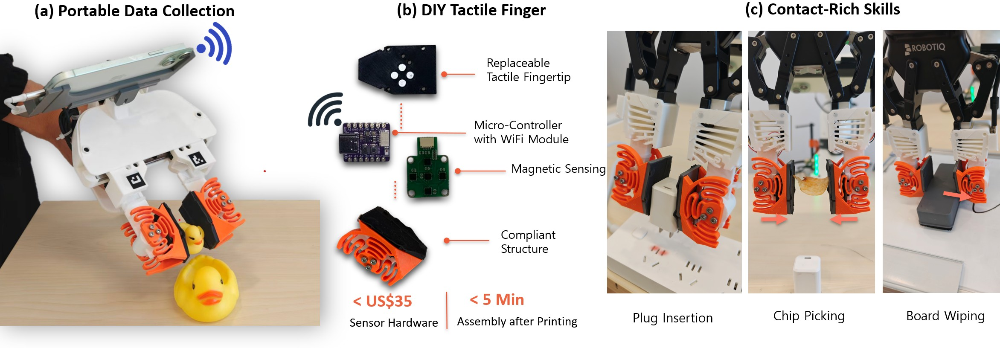
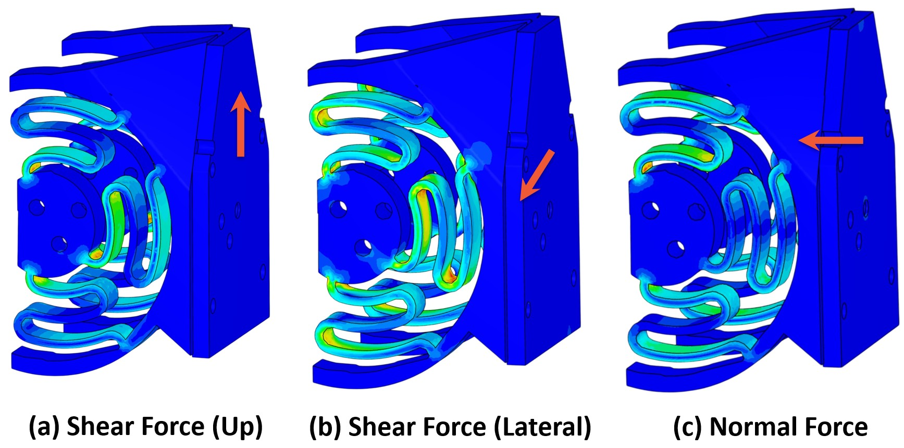
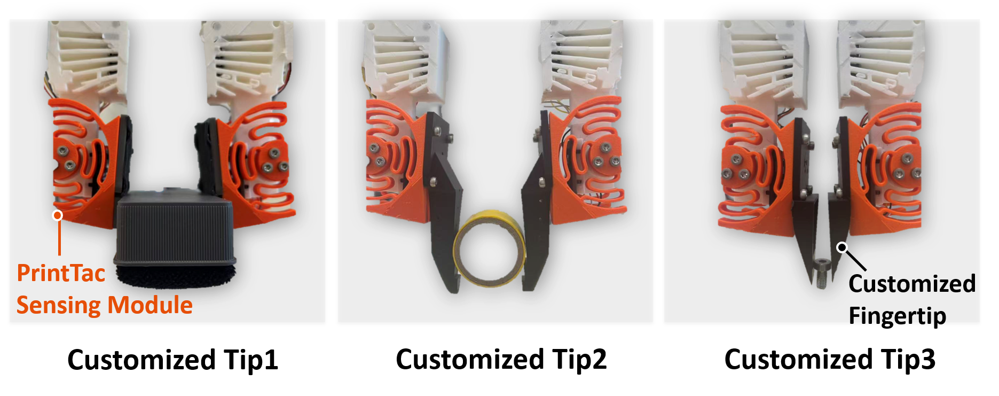
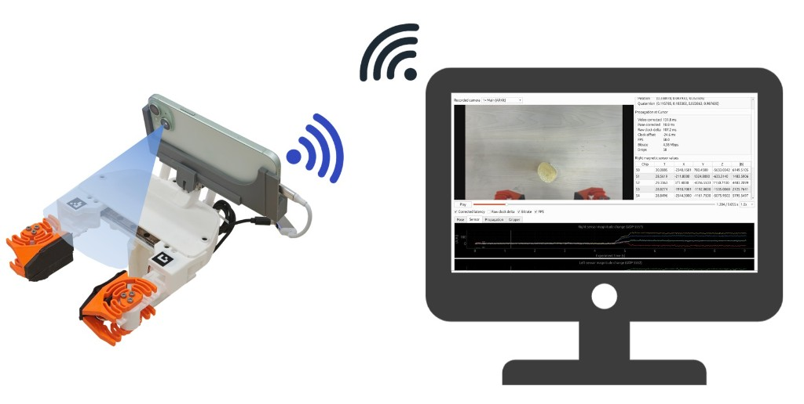
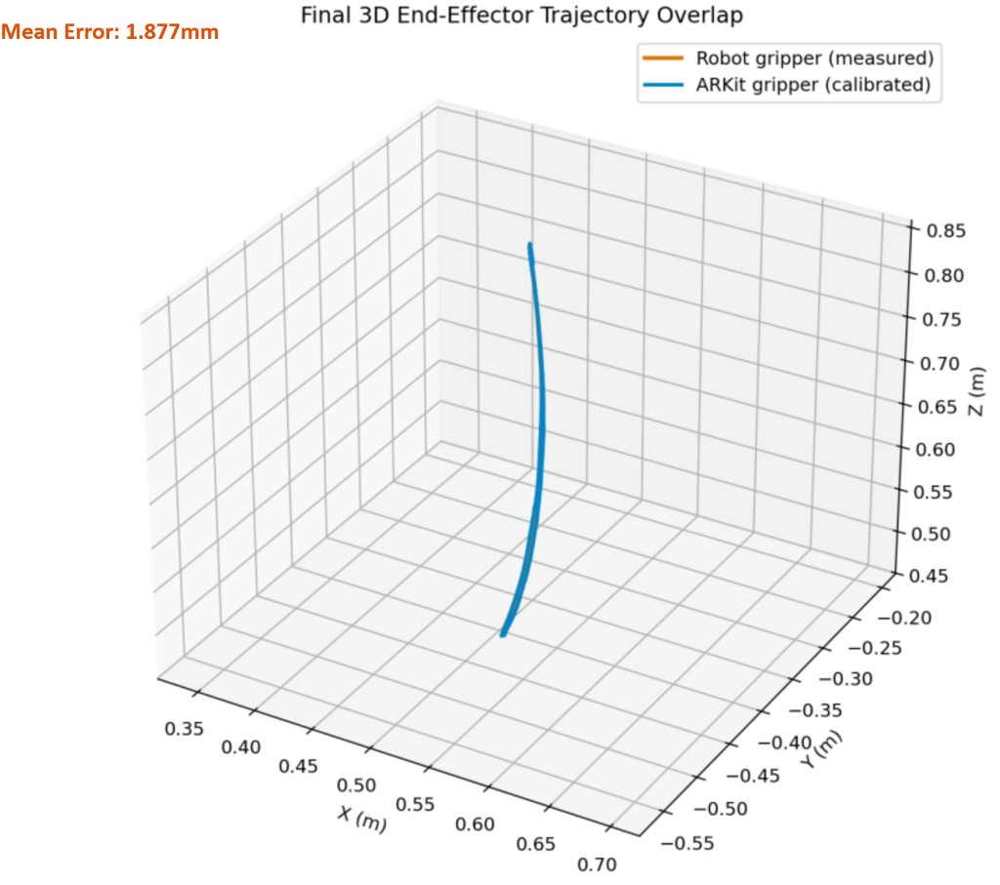
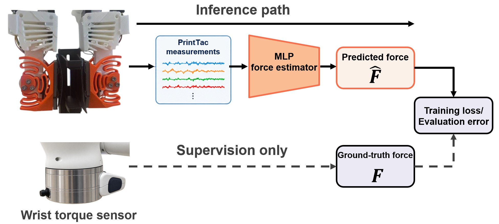
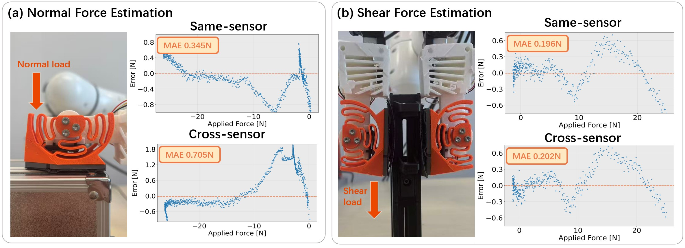
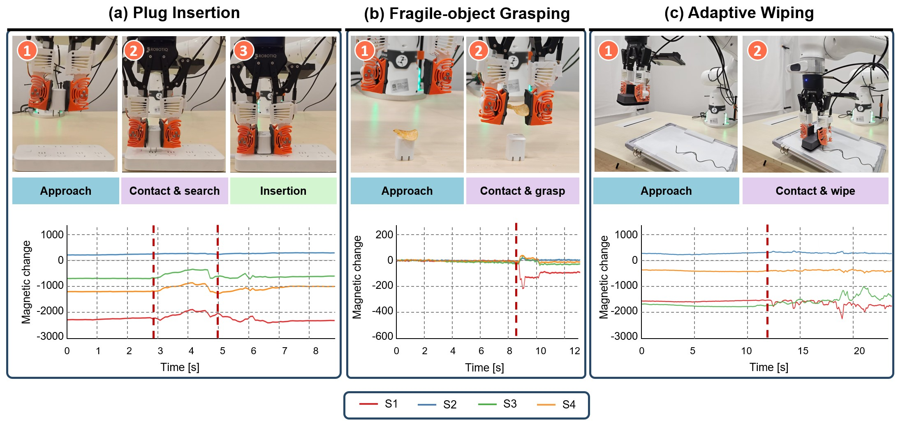

Desktop 3D printing
Each flexure is printed from the same CAD model with a fixed set of printing parameters, so the kinematics stay consistent across independently fabricated units.
Under review
From rapid fabrication to contact-rich manipulation.
Project video: fabrication, untethered UMI collection, and visuo-tactile rollouts versus a vision-only baseline.
While tactile feedback is critical for contact-rich manipulation, scaling tactile robot learning remains bottlenecked by hardware costs, fabrication complexity, and sensor-to-sensor domain gaps that hinder data reuse. High-resolution tactile sensors incur substantial visual-encoding overheads, while existing low-cost magnetic alternatives rely on elastomer casting with limited manufacturing consistency. We present PrintTac, a low-cost (<USD 35), DIY-reproducible tactile fingertip designed for consistent, scalable multimodal data collection. By coupling an off-the-shelf magnetometer board with a monolithic 3D-printed compliant mechanism, PrintTac replaces cast elastomers with a reproducible flexure, eliminating elastomer mixing, casting, and curing. It can be assembled in five minutes without per-device recalibration and features a modular, quickly replaceable contact tip. We integrate PrintTac into an untethered UMI data-collection system that synchronizes tactile signals, visual streams, and ARKit poses onboard a smartphone over Wi-Fi. Real-robot experiments on insertion, grasping, and surface-interaction tasks show that PrintTac-conditioned policies consistently outperform vision-only baselines trained on the same demonstrations.
A portable UMI gripper with PrintTac fingers collects demonstrations; independently fabricated fingertips then deploy the same policy on the robot.

PrintTac is built around mechanical determinism: a PETG flexure printed from a fixed CAD model, an off-the-shelf magnetometer array, and a contact tip that can be swapped in under one minute.

High-resolution optical sensors are expensive and shift the learning problem onto visual encoders. Cast magnetic skins are cheaper, but mixing, casting, and curing introduce instance-to-instance variation. PrintTac uses a monolithic PETG flexure instead.

Each flexure is printed from the same CAD model with a fixed set of printing parameters, so the kinematics stay consistent across independently fabricated units.
The sensing core is an eFlesh-style board with five three-axis magnetometers, neodymium magnets on the contact plate, and an Adafruit QT Py ESP32. Material cost is under USD 35 per finger.
All visual, tactile, and kinematic streams are ingested on the handheld iPhone. There is no tether to a host PC during demonstration.


UMI demonstration with wrist RGB, PrintTac, and ARKit pose recorded onboard the iPhone.
The same untethered pipeline collects visuo-tactile demonstrations for tight-tolerance insertion.
Contact-rich wiping demonstrations without a host PC tether during collection.
A conditional diffusion policy consumes wrist RGB, raw PrintTac measurements, and proprioception. Tactile readings are normalized and concatenated directly, without a ViT or CNN tactile encoder.
An MLP trained on one fingertip transfers to an independently fabricated instance without recalibration, fine-tuning, or baseline offset adjustment.


Policies are trained on demonstrations from sensor instances Sdemo and rolled out on independently fabricated Seval without retraining. Each comparison shows PrintTac (left) versus vision-only (right).

63 demonstrations. Tactile contact onset stops finger closure before the chip fractures. Vision-only often drops or crushes it. 20% → 100%.
65 demonstrations. Touch detects casing contact and snap-through; vision-only can jam against the housing. 40% → 90%.
68 demonstrations, evaluated on boards tilted up to 15°. Tactile preload tracks the incline; vision-only loses contact. 30% → 90%.
Both policies receive only the initial image o0. Only the PrintTac policy gets closed-loop touch. 0% → 90%.
Table I. Ten matched trials per task. Timeouts over 45 seconds count as failures.
| Task | Vision only | Vision + PrintTac |
|---|---|---|
| Plug insertion | 40% (4/10) | 90% (9/10) |
| Chip picking | 20% (2/10) | 100% (10/10) |
| Whiteboard wiping | 30% (3/10) | 90% (9/10) |
| Tactile-only wiping | 0% (0/10) | 90% (9/10) |
Insertion succeeds when more than 80% of the plug length enters the socket. Chip picking succeeds when the chip is grasped and lifted. Wiping succeeds when more than 90% of visible markings are removed.
If you find this work useful, please cite:
@inproceedings{printtac2026,
title = {PrintTac: Reproducible Tactile Fingertips for Scalable Robot Learning},
author = {Anonymous Authors},
booktitle = {IEEE International Conference on Robotics and Automation (ICRA)},
year = {2026},
note = {Under review}
}